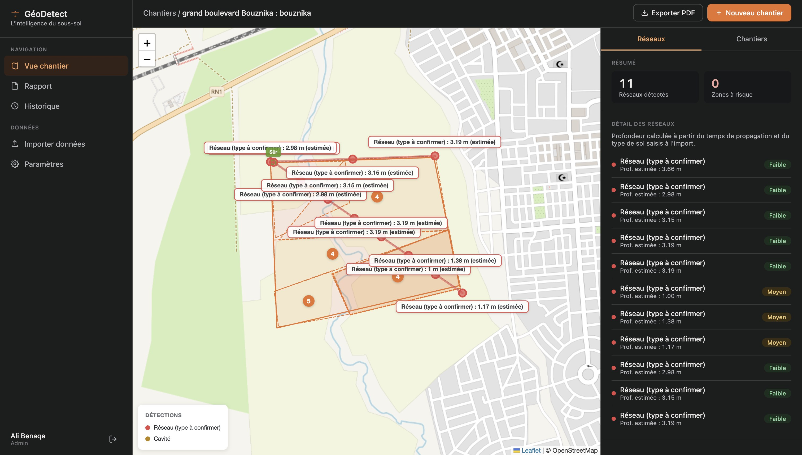

Zones de chantier, passages de scan, détections géolocalisées avec profondeur calculée, rapports PDF : tout le sous-sol de votre projet, dans une interface consultable à vie.

Zones dessinées, passages de scan, images géoradar chargées.
Les réseaux et cavités apparaissent sur la carte, à leur position.
Chaque détection avec sa profondeur calculée et son niveau de risque.
PDF complet avec plan du chantier, prêt pour le terrain.
Les strates du sol, les réseaux qui le traversent, les cavités invisibles en surface. Le plan orange simule le passage du scan : chaque détection s'allume à son passage. Glissez pour explorer.